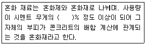

콘크리트기능사 (2007-09-16 기출문제)
1과목: 콘크리트재료
1. 아래 표의 ( )안에 알맞은 값은?

- 1
- 3
- 5
- 8
(정답률: 59%)

2. 시멘트의 분말도에 관한 설명 중 틀린 것은?
- 시멘트의 입자가 가늘수록 분말도가 높다.
- 시멘트 입자가 가는 정도를 나타내는 것을 분말도라 한다.
- 시멘트의 분말도가 높으면 조기강도가 커진다.
- 시멘트의 분말도가 높으면 균열이 없고 풍화가 생기지 않는다.
(정답률: 79%)
3. 시멘트의 종류 중 혼합 시멘트가 아닌 것은?
- 고로슬래그 시멘트
- 메이슨리 시멘트
- 플라이애시 시멘트
- 포틀랜드 포졸란 시멘트
(정답률: 67%)
4. 보통 사용하는 콘크리트는 골재가 전체 부피의 약 몇 % 정도를 차지 하는가?
- 15%
- 30%
- 40%
- 70%
(정답률: 56%)
5. 가루 석탄을 연소 시킬 때 굴뚝에서 집진기로 모은 아주 작은 입자의 재이며 실리카질 혼화재로 입자가 둥글고 매끄럽기 때문에 콘크리트의 워커빌리티를 좋게 하고 수화열이 적으며, 장기 강도를 크게 하는 것은?
- 포촐라나(pozzolana)
- 플라이 애쉬(fly ash)
- 고로 슬래그 미분말
- AE제
(정답률: 81%)
6. 서중콘크리트의 시공시 워커빌리티의 저하 및 레디믹스트 콘크리트의 운반거리가 멀어져 운반시간이 장시간 소요되는 경우에 유효한 혼화제는?
- 감수제
- 지연제
- 방수제
- 경화촉진제
(정답률: 91%)
7. 단면적이 25cm2인 모르타르 시험체의 최대 파괴하중이 4500kg일 때 압축강도는?
- 160kg/cm2
- 170kg/cm2
- 180kg/cm2
- 182.5kg/cm2
(정답률: 64%)
8. 감수제의 사용효과 중 옳지 않은 것은?
- 시멘트 풀의 유동성을 감소시킬 수 있다.
- 워커빌리티를 좋게 할 수 있다.
- 단위수량을 감소시킬 수 있다.
- 압축강도를 증가시킬 수 있다.
(정답률: 42%)
9. 품질이 좋은 콘크리트를 만들기 위한 잔골재 조립률의 범위로 옳은 것은?
- 2.3~3.1
- 3.2~4.7
- 6~8
- 8~10
(정답률: 64%)
10. 다음 중 댐, 하천, 항만 등의 구조물에 사용하는 시멘트로 가장 적합한 것은?
- 조강포틀랜드 시멘트
- 알루미나 시멘트
- 초속경 시멘트
- 고로슬래그 시멘트
(정답률: 38%)
11. 반죽질기의 정도에 따르는 작업이 어렵고 쉬운 정도 및 재료의 분리에 저항하는 정도를 나타내는 굳지 않은 콘크리트의 성질을 무엇이라 하는가?
- 반죽질기
- 워커빌리티
- 성형성
- 피니셔빌리티
(정답률: 69%)
12. 다음 중 시멘트 저장 방법으로 부적당한 것은?
- 지상에서 30cm 이상 높은 마루에 저장한다.
- 습기가 차단되도록 방습이 되는 창고에 저장한다.
- 시멘트는 13포 이상 쌓아야 한다.
- 시멘트는 입하순으로 사용한다.
(정답률: 82%)
13. 조립률이 3.0인 잔골재 0.2m3와 조립률이 7.0인 0.3m3의 굵은 골재를 혼합한 경우의 조립률은 얼마인가?
- 4.2
- 4.6
- 5.0
- 5.4
(정답률: 31%)
14. 공기 중 건조 상태에서 골재의 입자가 표면 건조 포화상태로 되기까지 흡수된 물의 양을 말하는 것은?
- 유효흡수량
- 흡수량
- 표면수량
- 함수량
(정답률: 57%)
15. 골재의 함수상태 네 가지 중 습기가 없는 실내에서 자연 건조시킨 것으로서 골재알 속의 빈틈 일부가 물로 차있는 상태는?
- 습윤상태
- 절대건조상태
- 표면건조 포화상태
- 공기중 건조상태
(정답률: 62%)
16. 혼화재료의 저장에 대한 설명으로 부적당한 것은?
- 혼화제는 먼지나 불순물이 혼입되지 않고 변질되지 않도록 저장한다.
- 저장이 오래 된 것은 시험후 사용여부를 결정하여야 한다.
- 혼화재는 날리지 않도록 그 취급에 주의해야 한다.
- 혼화재는 습기가 약간 있는 창고내에 저장한다.
(정답률: 89%)
17. 공극률 25%인 골재의 실적율은?
- 12.5%
- 25%
- 50%
- 75%
(정답률: 83%)
18. 굳지 않은 콘크리트의 공기량 시험 중 콘크리트 속에 있는 공기를 물로 치환하여 공기량을 측정하는 방법은?
- 무게법
- 공기실 압력법
- 블리딩 시험법
- 부피법
(정답률: 28%)
19. 시멘트의 성분 중 응결시간을 조절하기 위한 것은?
- 석고
- 석회석
- 점토
- 플라이애쉬
(정답률: 75%)
20. 콘크리트용 골재에서 굵은골재를 가장 옳게 설명한 것은?
- 10mm체를 전부 통과하고 5mm체에 거의 통과하며 0.15mm체에 거의 남는 골재
- 10mm체를 전부 통과하고 5mm체에 거의 통과하며 0.07mm체에 거의 남는 골재
- 2.5mm체에 거의 다 남는 골재 또는 2.5mm체에 다 남는 골재
- 5mm체에 거의 다 남는 골재 또는 5mm체에 다 남는 골재
(정답률: 84%)
2과목: 콘크리트시공
21. 콘크리트를 타설한 다음 일정 기간 동안 콘크리트에 충분한 온도와 습도를 유지시켜 주는 것을 무엇이라 하는가?
- 콘크리트 진동
- 콘크리트 다짐
- 콘크리트 양생
- 콘크리트 시공
(정답률: 90%)
22. 수송관 속의 콘크리트를 압축공기에 의하여 압력으로 보내는 것으로 주로 터널의 둘레 치기에 사용되는 것은?
- 버킷(bucket)
- 벨트컨베이어
- 슈트
- 콘크리트 플레이서
(정답률: 55%)
23. 높은 곳에서 낮은 곳으로 콘크리트를 타설할 경우 적당한 장비는?
- 로울러
- 트럭(truck)
- 슈트(chute)
- 손수레
(정답률: 80%)
24. 콘크리트를 한 차례 다지기를 한 뒤에 알맞는 시기에 다시 진동을 주는 것을 재진동이라 한다. 재진동의 효과가 아닌 것은?
- 콘크리트 속의 빈틈이 증가한다.
- 콘크리트의 강도가 증가한다.
- 철근과의 부착 강도가 증가한다.
- 재료의 침하에 의한 균열을 막을 수 있다.
(정답률: 83%)
25. 배합설계에서 단위 골재량의 절대 부피가 0.665m3, 잔골재율이 40% 일때 단위 굵은 골재의 절대 부피는 얼마인가? (단, 굵은 골재의 비중은 2.63임)
- 0.399m3
- 0.566m3
- 0.266m3
- 0.499m3
(정답률: 37%)
26. 다음의 콘크리트 운반기계중에서 운반거리가 먼 경우 가장 적합한 기계는?
- 벨트 컨베이어(Belt conveyer)
- 버킷(Bucket)
- 트럭 애지테이커(truck agitator)
- 콘크리트 펌프(concrete pump)
(정답률: 57%)
27. 일반 수중콘크리트를 시공할 때 물-시멘트비(W/C)와 단위 시멘트량은 얼마를 표준으로 하는가?
- 물-시멘트비 50%이하, 단위 시멘트량 300kg/m3이상
- 물-시멘트비 65%이하, 단위 시멘트량 370kg/m3이상
- 물-시멘트비 50%이하, 단위 시멘트량 370kg/m3이상
- 물-시멘트비 65%이하, 단위 시멘트량 300kg/m3이상
(정답률: 63%)
28. AE제를 사용한 콘크리트의 공기량은 일반적으로 콘크리트 부피의 몇 % 정도를 표준으로 하는가?
- 1~3%
- 4~7%
- 8~10%
- 11~14%
(정답률: 63%)
29. 콘크리트 다짐기계 중 비교적 두께가 얇고 면적이 넓은 도로 포장 등의 다지기에 사용되는 것은?
- 래머(rammer)
- 내부진동기
- 표면진동기
- 거푸집진동기
(정답률: 79%)
30. 부재의 치수가 커서 시멘트의 수화열로 인한 온도 상승 및 하강에 따른 콘크리트의 팽창과 수축을 고려하여 시공해야 하는 콘크리트는 다음 중 어느 것인가?
- 매스 콘크리트
- 프리팩트 콘크리트
- 강섬유 콘크리트
- 레진 콘크리트
(정답률: 52%)
31. 수밀콘크리트의 물-시멘트비는 얼마 이하를 표준으로 하는가?(오류 신고가 접수된 문제입니다. 반드시 정답과 해설을 확인하시기 바랍니다.)
- 50%
- 55%
- 60%
- 65%
(정답률: 30%)
32. 콘크리트의 배합 설계에 대한 설명 중 옳지 않은 것은?
- 시방배합에서 사용하는 골재는 공기중 건조 상태의 것으로 한다.
- 단위수량은 작업이 가능한 범위 내에서 될 수 있는 대로 적게 되도록 시험을 통해 정한다.
- 설계 및 시공상 허용되는 범위안에서 굵은 골재의 최대 치수가 큰 것을 사용하는 것이 경제적이다.
- 배합은 충분한 내구성과 강도를 가지도록 해야 한다.
(정답률: 58%)
33. 콘크리트의 강도를 좌우하는 요인 중 가장 큰 것은?
- 공기량
- 굵은골재의 최대치수
- 잔골재율
- 물-시멘트 비
(정답률: 63%)
34. 콘크리트 비빔작업시 시멘트 계량의 허용오차는 얼마 이하 인가?
- 1%
- 2%
- 3%
- 4%
(정답률: 57%)
35. 단위수량이 160kg/m3이고 물-시멘트비가 55%일 때 단위 시멘트량은?
- 283kg/m3
- 287kg/m3
- 291kg/m3
- 295kg/m3
(정답률: 51%)
36. 레디믹스트 콘크리트에 관한 다음 내용 중 잘못된 것은?
- 워커빌리티를 단시간에 조절할 수 있다.
- 단기간에 많은 양의 콘크리트를 시공할 수 있다.
- 콘크리트 반죽을 위한 현장설비가 필요없다.
- 공사비용 절감 및 공사기간을 단축할 수 있다.
(정답률: 60%)
37. 콘크리트의 비비기로부터 타설이 끝날때까지의 시간의 기준으로 옳은 것은? (단, 외기온도가 25℃미만의 경우)
- 1시간 이내
- 1시간 30분 이내
- 2시간 이내
- 2시간 30분 이내
(정답률: 51%)
38. 콘크리트 플랜트에서 콘크리트를 공급받아 비비면서 주행하는 레디믹스트콘크리트 운반용 트럭은?
- 슈트
- 트럭 믹서
- 콘크리트 펌프
- 콘크리트 플레이서
(정답률: 75%)
39. 거푸집과 동바리에 관한 설명 중 옳지 않은 것은?
- 연직부재의 거푸집은 수평부재의 거푸집보다 빨리 떼어낸다.
- 보에서는 밑면 거푸집을 양측면의 거푸집보다 먼저 떼어낸다.
- 거푸집을 시공할 때 거푸집 판의 안쪽에 박리제를 발라서 콘크리트가 거푸집에 붙는 것을 방지하도록 한다.
- 거푸집 및 동바리는 콘크리트가 자중 및 시공중에 가해지는 하중에 충분히 견딜만한 강도를 가질 때까지 해체 해서는 안된다.
(정답률: 68%)
40. 일반콘크리트 배합 설계 시 반드시 해야 할 사항에 가장 적합치 않은 것은?
- 물-시멘트비(W/C)를 결정한다.
- 잔골재의 최소치수를 결정한다.
- 슬럼프 값을 선정한다.
- 공기량을 결정한다.
(정답률: 63%)
3과목: 콘크리트 재료시험
41. 콘크리트 배합설계 순서 중 가장 마지막에 하는 작업은?
- 굵은골재의 최대치수 결정
- 물-시멘트비 결정
- 골재량 산정
- 시방배합을 현장배합으로 수정
(정답률: 76%)
42. 다음 중 건조로에서 1⑤±5℃의 온도로 골재를 일정한 무게가 되도록 건조시킨 골재의 상태는?
- 절대건조상태
- 공기중 건조상태
- 표면건조 포화상태
- 습윤상태
(정답률: 45%)
43. 콘크리트 배합설계에서 잔골재의 부피 290ℓ, 굵은 골재의 부피 510ℓ를 얻었다면 잔골재율은 얼마인가?
- 29%
- 36%
- 57%
- 64%
(정답률: 50%)
44. 콘크리트 공기량 시험에서 골재의 수정계수를 구하고자 할 때 잔골재를 넣을때마다 다짐대로 다지는데 몇 회씩 다지는가? (단, 공기실 압력법)
- 10회
- 15회
- 20회
- 25회
(정답률: 10%)
45. 된 반죽콘크리트의 압축강도 시험 공시체 제작을 할 때 시멘트풀로 캐핑을 하고자 한다. 이때 사용하는 시멘트풀의 물-시멘트비로 가장 적합한 것은?
- 23~26%
- 27~30%
- 31~33%
- 34~37%
(정답률: 72%)
46. 황산나트륨에 의한 잔골재의 안정성 시험을 할 경우, 조작을 5번 반복했을 때의 잔골재의 손실질량 백분율의 한도는 일반적으로 얼마인가?
- 5%
- 7%
- 10%
- 12%
(정답률: 35%)
47. 굳지않은 콘크리트의 압력법에 의한 공기량 측정기구는?
- 보일형 공기량 측정기
- 워싱턴형 공기량 측정기
- 관입침
- 슈미트 해머
(정답률: 55%)
48. 굵은 골재의 최대 치수가 40mm이하인 경우에 사용하는 콘크리트 압축강도 시험용 공시체의 크기로 가장 적합한 것은?
- ø15×40cm
- ø10×30cm
- ø15×30cm
- ø15×15cm
(정답률: 57%)
49. 시방배합에 해당하는 설명은 어느 것인가?
- 시방서 또는 책임기술자가 지시한 배합을 말한다.
- 시방서 또는 현장에서 직접 배합한 것을 말한다.
- 시방서와 상관없이 현장에서 배합한 것을 말한다.
- 현장에서 사용하는 골재의 함수상태를 고려하여 배합한 것을 말한다.
(정답률: 84%)
50. 콘크리트 배합설계에서 물-시멘트비를 정하는 기준으로 가장 거리가 먼 것은?
- 압축강도
- 크리프
- 내구성
- 수밀성
(정답률: 61%)
51. 콘크리트 인장강도에 대한 설명 중 틀린 것은?
- 인장강도는 압축강도의 1/30정도이다.
- 인장강도는 보통 쪼갬인장강도시험 방법을 표준으로 하고 있다.
- 인장강도는 콘크리트 포장에서 중요하다.
- 인장강도는 물탱크 같은 구조물에서 중요하다.
(정답률: 57%)
52. 다음 중 콘크리트용 모래에 포함된 유기불순물 시험에 사용하는 시약이 아닌 것은?
- 탄닌산
- 알콜
- 황산마그네슘
- 수산화나트륨
(정답률: 36%)
53. 워커빌리티(Workability) 판정기준이 되는 반죽질기 측정 시험 방법이 아닌 것은?
- 켈리블 관입 시험
- 슬럼프 시험
- 리몰딩 시험
- 슈미트 해머 시험
(정답률: 65%)
54. 슬럼프 시험에서 매 층당 다지는 횟수는?
- 10회로 한다.
- 15회로 한다.
- 20회로 한다.
- 25회로 한다.
(정답률: 82%)
55. 지름이 10cm, 길이가 20cm인 콘크리트 공시체로 쪼갬인장 강도 시험을 실시한 결과, 공시체 파괴시 시험기에 나타난 최대하중이 7230kg 이었다. 이 공시체의 인장강도는?
- 21kg/cm2
- 23kg/cm2
- 25kg/cm2
- 27kg/cm2
(정답률: 56%)
56. 콘크리트 압축강도 시험용 몰드(mold) 제작에 있어서 공시체의 양생온도로 가장 적합한 것은?
- 13~17℃
- 18~22℃
- 23~27℃
- 28~32℃
(정답률: 68%)
57. 콘크리트의 블리딩 시험을 통하여 판정할 수 있는 것은 무엇인가?
- 재료분리의 경향
- 응결, 경화의 시간
- 워커빌리티의 상태
- 시멘트의 비중
(정답률: 48%)
58. 15×15×53(cm) 크기의 콘크리트 휨 강도 시험용 공시체를 만들 경우 매층별 다짐횟수는?
- 25회
- 50회
- 윗면적 7cm2당 1회
- 윗면적 10cm2당 1회
(정답률: 40%)
59. 콘크리트 휨 강도시험에서 공시체가 지간의 3등분 가운데 부분에서 파괴되었을 경우 휨강도를 구하면? (단, 지간길이 : 45cm, 평균폭 : 15cm, 평균두께 : 15cm 시험기에 나타난 최대하중 : 3070kg)
- 약 38kg/cm2
- 약 41kg/cm2
- 약 50kg/cm2
- 약 56kg/cm2
(정답률: 33%)
60. 다음 블리딩 시험에 대한 설명이 올바른 것은?
- 시험하는 동안 온도 25±1℃로 유지해야 한다.
- 굵은골재의 최대치수가 40mm 이상인 경우에 적용한다.
- 기록한 처음 시각에서 60분 동안 10분마다, 콘크리트 표면에 스며나온 물을 빨아낸다.
- 시료는 용기에 5층으로 나누어 넣는다.
(정답률: 56%)